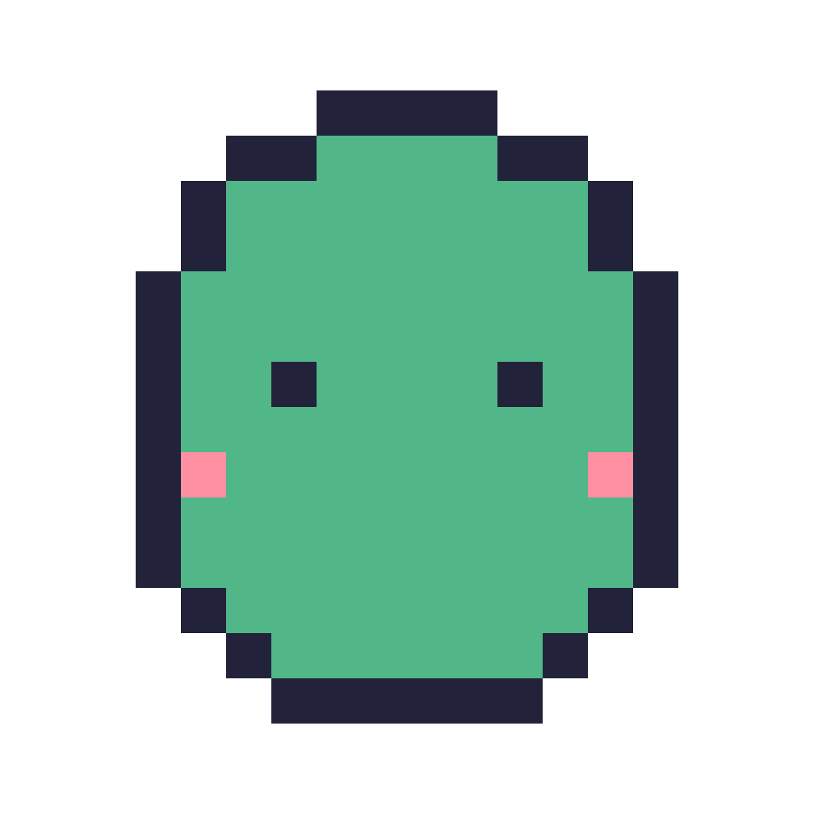

STAND UP BUDDY
Your desk's little conscience. A whimsical retro pixel pal that pops up every so often to nudge you to stand up and stretch.
Free & open source. First launch on macOS may need a quick unblock step — see how.
⏰
Nudges you every 15–60 min, your call
🎮
Charming retro pixel character & chiptune blip
🧘
Waits until you're back before counting again
🔕
Mute, pause, or quit anytime from the menu bar